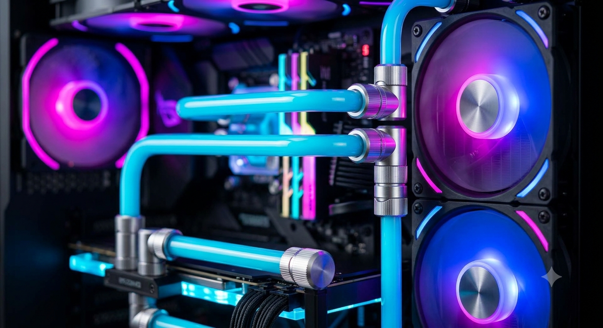
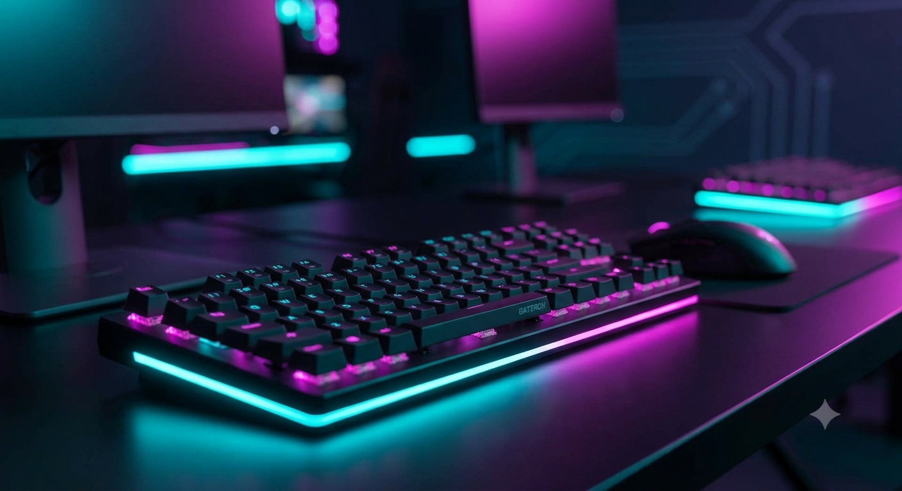
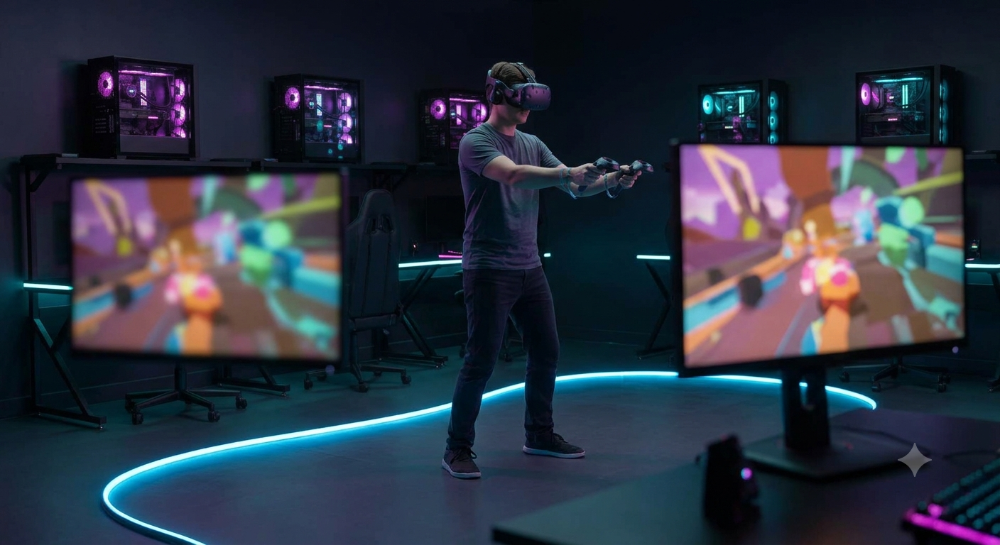

Hardwaren: Ydeevne, præcision og kvalitet

Maskinerne er motoren i vores forening. Vi råder over 20 professionelle spilstationer, der hver især er sat op til at levere en flydende spiloplevelse uden lagg eller frames-drop. Fra vores klippestabile øve-PC'er til vores vilde turnerings-rigs med 240Hz skærme.

Vi går aldrig på kompromis med udstyret eller ergonomien. Vores maskiner vedligeholdes løbende af vores eget tech-crew, og vi sikrer, at alle siddestillinger og skærmhøjder kan indstilles korrekt. Når du sætter dig ved en ByteCave-station, træder du ind i et setup, der er bygget til at præstere.
